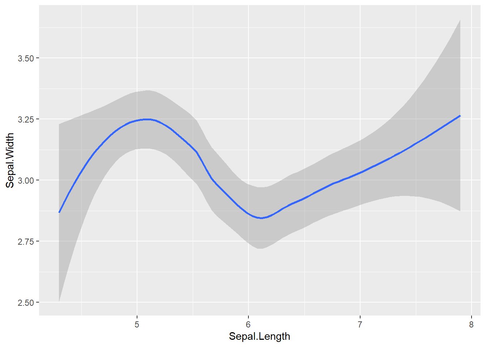
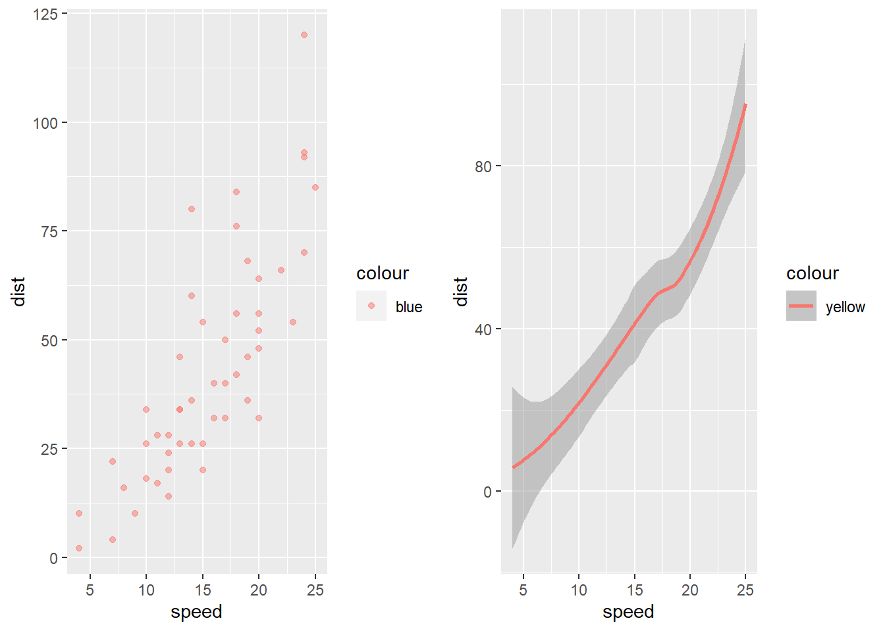

Quarto est un package de R developpé dans le but de produire des presentations, des rapports et des documents sous forme de fichier world, pdf ou html. De meme, elle a la possibilité de produire des presentations sous forme de fichier powerpoint(pptx). Ce package est une exetension du Rmarkdown que nous connaissons tous et qui est utilisé pour faire des documents. A la seule diffrence que Quarto est plus smart et facile à utilisé. nous n’utiliserons pratiquement pas de balise comme c’est le cas dans Rmarkdown pour les titres pour ne citer que cela. Nous vous invitons à suivre attentivement ce recapitulatif de Quarto que nous avons pris le temps de parfaire et esperons que quarto vous sera utile dans votre travail.
Avantage de Quarto
Tout comme Rmarkdown, Quarto a les memes fonctionnalités que Rmarkdown. En effet elle peut faire tout ce que Rmarkdown peut faire en allant de la generation des documents de qualité à de magnifiques presentation powerpoint. Son avantage par rapport à Rmarkdown reside dans sa facilité d’utilisation. Elle ne necessite pas la maitrise des differentes syntaxes d’ecriture comme le necessiterait Rmarkdown. On peut meme le comparer à l’ecriture d’un fichier sur microsoft office word à la seule difference qu’elle inclut l’utilisation de code que ce soit sur R, python, sql…
Modèle de sortie d’un document Quarto
Quarto nous propose plusieurs modèle de sortie pour nos documents. En effet nous pouvons generer des documents sous format world, powerpoint, html, powerpoint. Elle nous offre une large game de document sous plusieurs extensions.
Mettre du code dans un fichier Quarto
Tout comme Rmarkdown, nous avons la possibilité d’inclure un grand nombre de zone pour inclure du code. En effet on appelle ces zones des chunks: Ces zones grisatres nous premettent d’inclure du code R, python, Sql, CSS, JAVA…
l’utilisation de R est definie par defaut dans les chunks, donc nous n’avons pas besoin de packages specifiques pour pouvoir l’utiliser. Cependant à la difference des autres languages, elle necessite l’installation de certains packages par exemple dans le cas de python, il est necessaire d’installer le package reticulate pour pouvoir l’utiliser.
Installation de Quarto
Pour installer Quarto, il vous suffit de l'installer à partir de packages en installant Quarto directement à partir du CRAN.
Si celà ne fonctionne pas, il suffit de reinstaller R et Rstudio et de reprendre la procedure. Apres quoi, vous pouvez maintenat l’installer à partir de de la fonction library(quarto). Enfin à partir de l’onglet file, vous avez accès à Quarto pour l’utiliser pleinement.
Utilisation de Quarto:
Description de l’environnement de Quarto
Le document Quarto comprend 3 parties que sont l’en-tête (YAML), le texte et les blocs de codes tous les trois forment le corps du document. Dans l’en-tete sont précisés des formats additionnels pour le document (Table de matières, références s’il y en a, des packages Latex à inclure si possible).
Quelques astcuces que vous pouvez utilisez pour le corps du devoir:
Insertion des titres
Pour insérer un nouveau titre, nous utilisons sur la barre, l’onglet Normal. En effet, nous avons à l’interieur de cet onglet, plusieurs niveaux de titre que nous pourrons utiliser pour rendre plus esthetique nos presentations. nous avons jusqu’a 6 titres que nous pourrons utiliser.
Titre 1: niveau 1
Titre 2: niveau 2
Titre 3: niveau 3
Titre 4: niveau 4
Titre 5: niveau 5
Titre 6: niveau 6
par defaut le texte est sous format Normal
Style du texte
Pour écrire le texte en gras il suffit d’appuyer sur la touche B qui se trouve sur la barre, ou on peut appyer sur format pour l’obtenir (c’est ecrit B Bold).
Pour écrire le texte en Italique il suffit d’appuyer sur la touche I qui se trouve sur la barre, ou on peut appyer sur format pour l’obtenir (c’est ecrit I Italique).
Pour écrire le texte en Italique et en Gras il suffit d’appuyer sur la touche I et G qui se trouve sur la barre, ou on peut appyer sur format pour l’obtenir (c’est ecrit I Italique et G Bold).
Pour souligner un texte, il suffit d’aller dans l’onglet Format et d’appuyer sur U (Underline).
Pour barrer un texte, il suffit d’allez dans l’onglet Format et au niveau de Texte on appuie sur Strickout.
Pour mettre un mot en exposant, il suffit d’aller dans Format et au niveau de Texte on appuie sur Superscript
Pour mettre un mot en indice, il suffit d’aller dans Format et au niveau de Texte on appuie sur Subscript.
Pour mettre un mot en majuscule ou en miniscule selon le format ou il initialement ecrit , il suffit d’aller dans Format et au niveau de Texte on appuie sur Small Caps.
Mise en couleur
Pour les mises en couleur, il faudra une maitrîse du langage CSS. Par exemple supposons que nous voulons metrre le texte suivant: Je suis a l'ENSAE en vert, je sélectionne d’abord mon texte , ensuite je vais dans Format ⟹ Div et dans l’attribut CSS Style je précise mon code pour la couleur. Cependant il peut arriver que je veuilles que seul mon texte Etudiant soit en vert. Là je fais la même chose mais au lieu d’insérer une div, j’insère un span.
comme illustration de ce qui a été dit
Je suis a l’ENSAE.
pour mettre uniquement un element du texte en couleur on peut utilise la meme methode juste qu’ a la difference on met un spam
par exemple
Etudiant
Bordure de texte
pour encadrer un texte, il faut egalement utilisé du css. On peut encadrer tout le texte ou une partie du texte.
comme illustration de ce qui a été dit:
Je suis à l’ENSAE de Dakar
Mise en forme (positionnement de texte):
Pour la position du texte (centrée, justifié, à droite ou à gauche)nous utilisont du code CSS. Nous utilisons les elements suivants:
pour centrer un texte on utilise text-align; center;
Texte Centré : je suis en ISE1 Eco
Pour mettre le texte à gauche nous utilisons: text-align; left;
Text Centrée à gauche Je suis en ISE1 math
Pour mettre le texte à droite nous utilisons: text-align; right;
Je suis en ISE1 Cycle long
Description du YAML(En tete d’un fichier quarto)
Pour definir le titre dans l’entete, il suffit de mettre Title: "Nom du document"
Pour definir le sous titre dans l’entete, il suffit de mettre Subtitle: “Sous titre”
Pour definir les auteurs dans l’entete, il suffit de mettre Authors: "YATABARE-Hamid-Sadibou-Maty"
Pour definir la date dans l’entete, il suffit de mettre date: 14/03/2024
Pour definir la table de matiere dans l’entete, il suffit de mettre
Output:
html_document:
pour mettre une table de matiere
toc : true
Pour mettre des numeros de lignes
number_sections:true
Pour avoir une table de matieres flottantes
toc-float: true
toc-title: pour le titre de la table de matière
lof: pour afficher la liste des figures
lot: pour afficher la liste des tableau.
code-line-numbers: pour afficher le numero de ligne dans les blocks de code.
Pour la sortie du document, on peut decider d’afficher le document avec les codes et les erreurs ou pas. Pour ne pas les afficher, on peut proceder de la sorte:
execute:
echo: false
warning: false
De meme on a la possibilité d’inclure le code avec les resulats ou pas:
on le fait de la sorte:
include : TRUE/FALSE
output : false/true pour afficher les resulats des chunks ou pas.
include-before-body : pour afficher la table de matiere au debut du fichier.
include-after-body : pour afficher la table de matiere enfin du fichier.
code-fold: true pour afficher un zone d’affichage du code quand on veut ou pas. cela est possible uniquement avec les fichier avec des sortie html.
l’instruction ci-dessous permet de generer les 3 fichiers à savoir html, pdf, word directement à partir du YAML.
format:
html:
code-fold: true
html-math-method: katex
pdf:
geometry:
-top=30mm
- left=30mm
docx: default
pour donner un aspect esthetique a votre sortie pour les codes vous pouvez utiliser egalement le code suivant :
highlight-style: github
cela permet de donner un sortie beaucoup plus jolie a votre document
Presentation des chunks codes
Quarto dispose d’une large game de chunk pour different format de langage: nous vous presenterons la forme de certains langage de programmation couramment utilisé sur des fichiers Quarto
ggplot(iris ,aes(x = Sepal.Length , y = Sepal.Width))+geom_smooth()

Donc nous avons la possibilité de realiser des graphiques et de faire tous ce que l’on pouvait faire d’habitude sur R.
Pour les codes python nous pouvons proceder de la sorte:
nous avons au niveau de la barre des onglets Insert et on appuie sur Excecutive Cell a partir de la nous pouvons choisir python pour obtenir un chunk python. Mais bien avant, il faudra avoir installer le package reticulate.
Code
for i inrange(10): print(i)
0
1
2
3
4
5
6
7
8
9
Donc vous voyez deja que l’on peut faire du python sur R. il est possible pour nos travaux d’utiliser les modules pandas ou numpy selon le travail que l’on aimerait faire.
Quarto dispose d’une possibilité d’inclure plusieurs langage a partir de cette commande que voici: code block. On peut l’obtenir à partir de insert et on appuie sur code block. A partir de cela, on met le langage de programmation que l’on souhaite utiliser bien sur en ayant le package necessaire pour l’utiliser sur R.
Etablir une table de matière:
Cela se fait au niveau dU YAML. Nous y avons donnée en detail tous les éléments de comment cela se passe dans la section YAML.
Numerotation des sections:
Pour creer une numeration sur quarto, il suffit d’aller au niveau de Format et à l’interieur on à l’onglet Bullet et Numbering qui permet de creer des listes. Ces listes peuvent etre ordonnées ou non selon ce que l’on veut faire. par exemple:
Yatabare
Hamib
Sadibou
Maty
liste non ordonnée
Ou on peut proceder par numerotation:
Maty
Sadibou
Hamib
Yatabare
liste ordonnée
Insertion d’image :
Pour inserer une image dans un fichier Quarto, il suffit d’appuyer sur l’onglet Insert situé sur la barre des taches et de selectionner Figure/image. A partir de cette commande, vous aurez la possibilité d’inclure tout les types de fichier dont vous aurez envie que ce soit de jpeg on du png.
Par exemple pour du jpeg:
carte du senegal
Vous avez egalement la possibilité de donner un titre à vos images. En effet en voulant l’inserer vous avons caption qui vous permet de mettre le titre de vos images.
Maintenant il peut arriver qu’on veuille insérer deux image l’une à coté de l’autre et non l’une après l’autre. Pour cela, nous devons insérer d’abord une div et préciser dans son attribut other que notre div contient 2 colonnes par layout-ncol= 2
En voici un exemple
{layout-ncol =” 2” fig-align=“left”}
De meme, on peut positionner l’image que nous voulons que ce soit à gauche, à droite ou au milieu. Cela s’effectue toujours à partir de figure ou on peut selectionner l’option qui nous convient.
Egalement au lieu de telecharger le fichier on peut inclure le lien(URL) du fichier si celui ci se trouve sur internet. Toujours cela se passe toujour de la meme facon que le telechargement juste qu’il faut inclure l’URL à la place de l’image.
Aussi nous avons la possibilité d’inserer 2 ou plusieur images l’un à coté de l’autre. Cela se fait de cette manière:
Code
library(ggplot2) library(gridExtra) plot1 <-ggplot(cars, aes(x = speed, y = dist, color ="blue")) +geom_point(alpha =0.5) plot2 <-ggplot(cars, aes(x = speed, y = dist, color ="yellow")) +geom_smooth (alpha =0.5) grid.arrange(plot1, plot2, ncol =2)

Insertion de Liens (Url, etc.)
Pour mettre un lien dans un fichier Quarto, la methode est simple, il faudra aller dans Insert. sur la base des onglets et selectionner link .Ensuite mettre le lien et préciser le texte à afficher et sur lequel cliquer pour avoir la page. Voici un exemple:
sur Ce lien, il est expliqué comment utiliser directement quarto sur VScode pour ceux et celle qui voudront l’utiliser. A la difference de Rstudio, elle utilise d’autres commande.
Insertion de tableau:
pour inserer des tableaux dans un fichier Quarto, la methode est simple. Il suffit de selectionner Table qui se trouve au dessus sur la barre des onglets. Ainsi, Quarto vous offre la possibilité de choisir le nombre de lignes et de colonnes selon notre convenance. Par exemple , pour creer un tableau de 2 lignes et de 2 colonnes. On peut proceder ainsi:
Variables
effectifs
sexe
masculin; feminin
age
0 à 21 ans
autres exemple, nous pouvons donner un tableau à 4 lignes et 1 colonnes:
nous pouvons egalement decider de placer le tableau à gauche, a droite, ou au milieu. On peut le faire avec l’option Table et ensuite on selectionne align column et on choisit l’option selon notre travail.
Ensae
ISE1
ISEP3
AS1
ISE2
Nom
prenom
classe
NGOM
Sadibou
ISE1
Kone
Chaka
ISE1
Sangare
Gnaleen
ISE1
Supposons mainteant que l’on veuille commenter le tableau mais que le commentaire se trouve à gauche du tableau. On place alors dans notre précédente div un texte à la place du deuxième tableau. voici un exemple:
C’est le logo de Quarto. Donc vous vyez bien que cela se met sur l’autrecoté de la figure.
Personnalisation du document
Insertion de page dans un fichier quarto:
Pour inserer une page dans un fichiier quarto la demarche est la suivante: ils suffit d’aller dans l’option Insert et de selectionner shortcode a l’interieur de duquel on doit mettre cette instruction
Inserer des notes de bas de page:
Il suffit d’insérer des notes de bas de page juste après le mot concerné. Pour cela cliquez Insert - Footnote . Ainsi, Une sorte de nouvelle page apparait en bas avec le numéro du bas de page que vous insérez.
il est à noté que l’ensemble des formules saisi dans un fichier Quarto necessite l’utilisation de code latex. Quarto nous facilite son utilisation, en effet dans l’onglet Insert on a LaTEX Math nous permet e saisir du code pour les formules. par exemple, nous pouvons utiliser du inline Math ou du display math selon la strcture de notre formule :
Par exemple:
E=mC^2
\tag{1}
Insérer des symboles ou emoji
On peut insérer les symboles dans Quarto en allant dans l’onglet Insert - Special Character - Insert Unicode ou encore Insert - special character - Insert Emoji
par exemple
je suis content😊
Insérer des liens hypertextes
On peut insérer egalement des des liens hypertextes vers des équations ou encore vers un tableau, une figure ou encore des titres. Pour ce faire il faudra d’abord préciser dans attributs l’ID du titre, texte ou figure. Ensuite vous allez dans l’onglet Insert - Cross reference.
Si nous voulons mettre en exergue quelque chose dans un document, nous pouvons le faire en insérant un note (callout) en précisant le type que nous voulons (Important, note...).
par exemple:
Important
A retenir
Ce texte est très important
Warning
NB:
Revoyez votre comportement.
Insérer des références bibliothèque
Pour insérer une citation tirée d’un document pendant que nous écrivons, nous devons connaitre le DOI de la source. Le DOI est un identifiant que chaque article en ligne a et c’est propre à cet article. Autrement, deux artciles ne peuvent pas avoir le mm DOI.
Pour ce faire une fois que nous avons écrit notre citation, pour la sourcer nous insérons le DOI du fichier dans Insert - Citation - DOI et nous ajoutons le DOI du fichier. Automatiquement il insère ce fichier dans notre référence bibligraphique en bas. Ainsi il est important d’insérer un titre référence après le document que nous écrivons.
Par exmple
La vulgariation scientique est un prealable au developpement de l’Afrique [@coulombe2009].
Diagrammes:
Nous avons la possibilité d’inclure des diagrammes sur un fichier Quarto. Cela necessite la maitrise de Mermaid et de Graphviz. Par exemple on a:
::: {.cell}
Code
flowchart LR A[ISE1] --> B(ISE2) B --> C{ISE3} C --> D[Evaluation d'impact] C --> E[Finance]
flowchart LR
A[ISE1] --> B(ISE2)
B --> C{ISE3}
C --> D[Evaluation d'impact]
C --> E[Finance]
:::
ceci est un exemple de diagramme fait avec mermaid.
de me nous pouvons utiliser du graphViz pour nos diagrammes; voici un exemple de diagramme
.jpg)